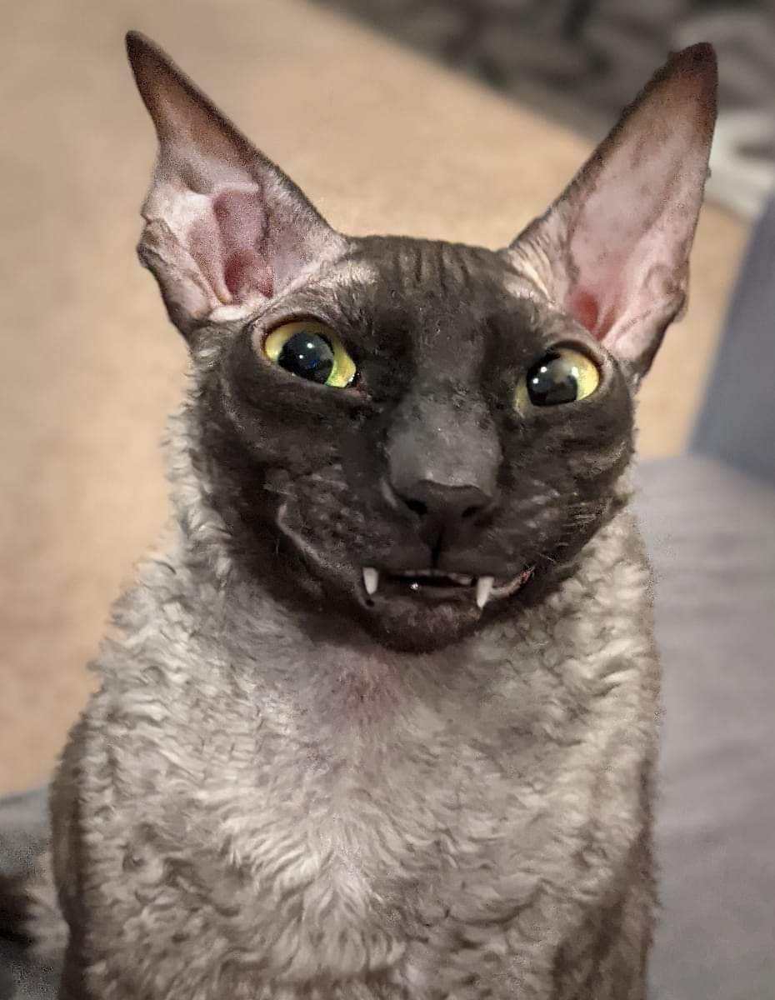

Моя любимая порода котов
Порода Ликой
Ликой (также кошка-оборотень, вервольф; на английском — Lykoi) — недавно выведенная порода кошек со странной внешностью, которая делает их похожими на оборотней.
Больше информации о породе Посмотреть видео о коте
